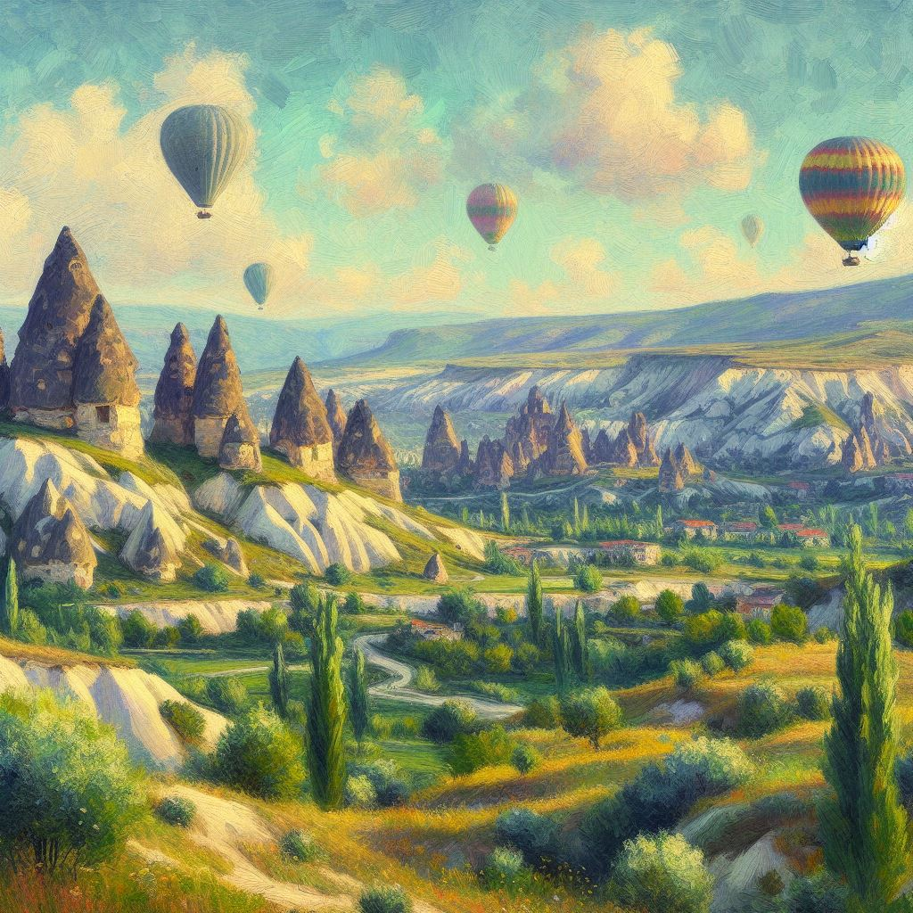

Sanatın büyüsüyle donatılmış bir düş dünyasında, bir ressam Türkiye'nin tarihi ve popüler yerlerini sanat akımlarının ve öncülerinin izinden giderek yeniden hayal ediyor. İstanbul'un tarihi yarımadasından Kapadokya'nın büyüleyici manzaralarına, Ege'nin masmavi kıyılarından Nemrut Dağı'nın gizemli heykellerine kadar, her köşe, farklı sanat akımlarının ve büyük ustaların izlerini taşıyor. Sürrealizmin derinliklerinden, post-empresyonizmin renk cümbüşüne, ressamın fırçasıyla her yapı, her manzara, ve her an, bir sanat eserine dönüşüyor, izleyicileri zamanda ve mekânda unutulmaz bir yolculuğa çıkarıyor.
Naturalizm
Naturalizm, 19. yüzyılın ikinci yarısında doğmuş bir akımdır. Gerçekliği detaylı bir şekilde betimler, objektif gözlem ve bilimsel yaklaşımı benimser. Doğaüstü unsurlardan uzaklaşarak toplumsal gerçekliği yansıtır. Zola'nın edebiyat akımıyla bağlantılıdır. Gustave Courbet, Édouard Manet gibi sanatçılar naturalizmin öncüleridir.
Post-Empresyonizm
"Post-empresyonizm, Empresyonizm'in renk ve ışık kullanımını genişleterek biçim ve duygu yoğunluğunu vurgulayan bir akımdır. Çizgisel yapının ön plana çıktığı bu akım, renklerin duygusal etkilerini vurgular. Van Gogh, Cézanne gibi sanatçılar, izlenimci dönemin ardından post-empresyonizmi şekillendiren öncülerdir. Sanatçılar, subjektif yorumlarına dayanarak doğayı yeniden şekillendirir."
Sembolizm
Sembolizm, 19. yüzyılın sonlarında ortaya çıkan bir akımdır. Gerçekliğin ötesindeki mistik ve sembolik anlamları vurgular. Simgeler, düşsel imgeler ve ruhsal arketiplerle dolu eserler üretilir. Sanatçılar, duygu, rüya ve mitolojiye odaklanır. Odilon Redon, Gustave Moreau gibi sanatçılar sembolizmin öncülerindendir.
Sürrealizm
Sürrealizm, rasyonel mantığı reddedip bilinçaltının ve rüyaların dünyasına odaklanan bir sanat akımıdır. Gerçeküstü imgeler, rastlantısal kompozisyonlar ve mantıksız birleşimlerle gerçeklik sınırlarını zorlar. Salvador Dalí, René Magritte gibi sanatçılar, sürrealist hareketin öncüleri arasındadır. Akım, hayal gücünün özgürce ifadesini ve bilinçdışının keşfini vurgular.
Fütürizm
Fütürizm, 20. yüzyılın başlarında İtalya'da doğmuş bir akımdır. Hız, teknoloji ve modernizm üzerine odaklanır. Kinetik enerjiyi, hareketi ve endüstriyel ilerlemeyi vurgular. Geleceğe yönelik umut dolu bir enerjiyi yansıtan dinamik ve keskin hatlara sahip resimlerle tanınır. Umberto Boccioni, Giacomo Balla gibi sanatçılar fütürist hareketin öncüleri arasındadır.